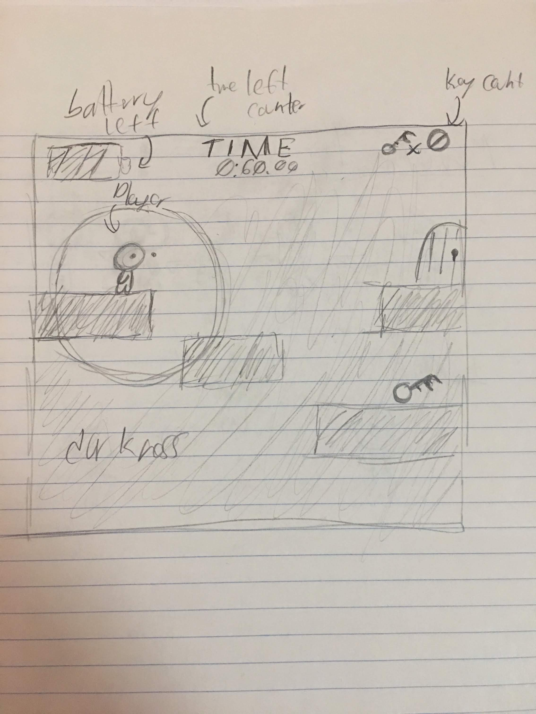
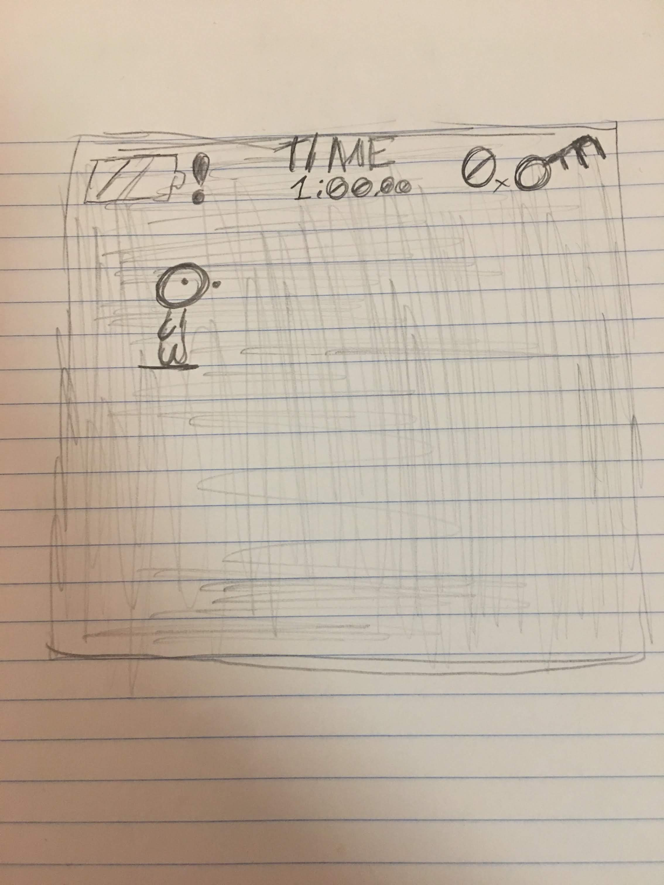

Genre
This Game is considered a retro arcade style Puzzle/Platformer.
Platform
at it's current stage, the game is only available on desktop.
Story
My major theme that guides the game is Darkness. The goal is to keep players guessing about whats next, where they need to go and how they might get there. I'd like to evoke an errie suspenseful mood as the players progress through the game. The players progress through the game by going through the level with only the aide of the flashlight to guide them.
In the game, you play as Clyde. Unfortunately for Clyde, the world has been plunged into darkness, and it's up to him to restore the light! using your flashlight, help guide Clyde through the darkness and bring light back into the world!
Esthetics
Graphically I believe the game is best suited for a retro or 8-bit esque art style. In sound design, I'd choose to go for a more ambient approach, with minimalism at it's front. I envision enviormental sounds as well as sound effects for jumping and movement.
Gameplay
Mechanics
The players can make linear movemnets up, left and right. There is gravity, so the players can fall if they poorly time a jump. the players also have the ability to toggle the flash light on and off, the light will slowly drain as the player holds it down, and when it reaches zero will need to recharge again before use.
Controls
all keyboard and mouse, the players can use the mouse to guide the flashlight around the stage.
teaching
the players have two options of viewing their controls: once from the main menu, and the second time at the start of the first level.
Player learning
The player needs to learn correct timing and memorization to mavigate through the level properly, as well as where to find keys used to unlock doors the reach the next level.
Screenshots
 Other
Currently I am still researching and working on my code alone, but If I were to sue any libraries, theyd be listed here.